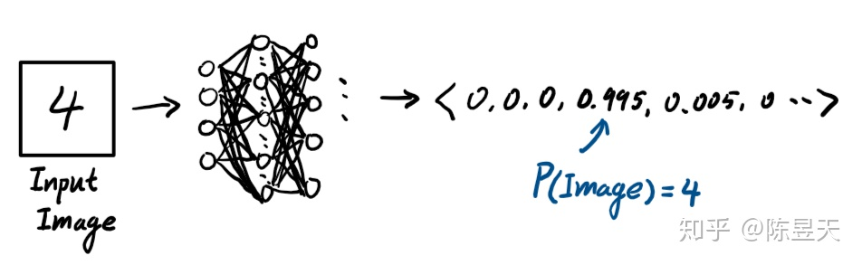
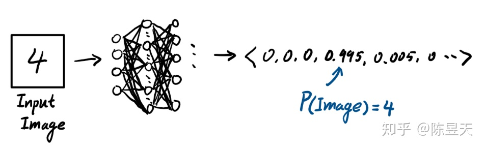
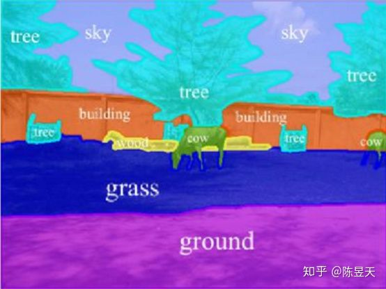
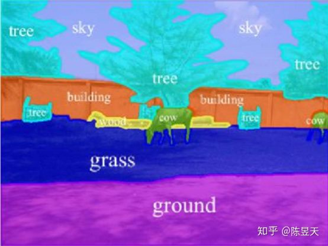
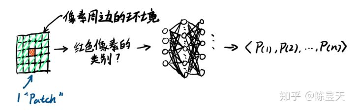
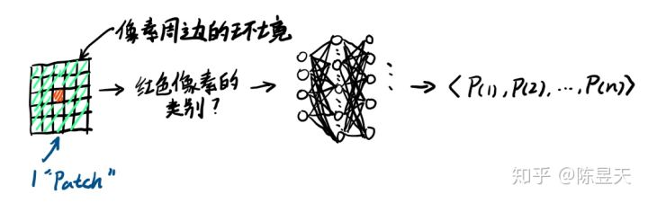
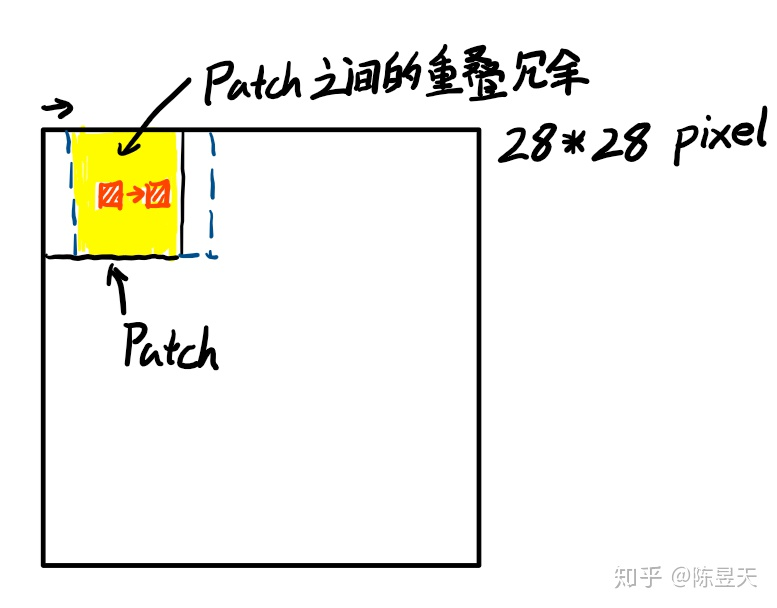
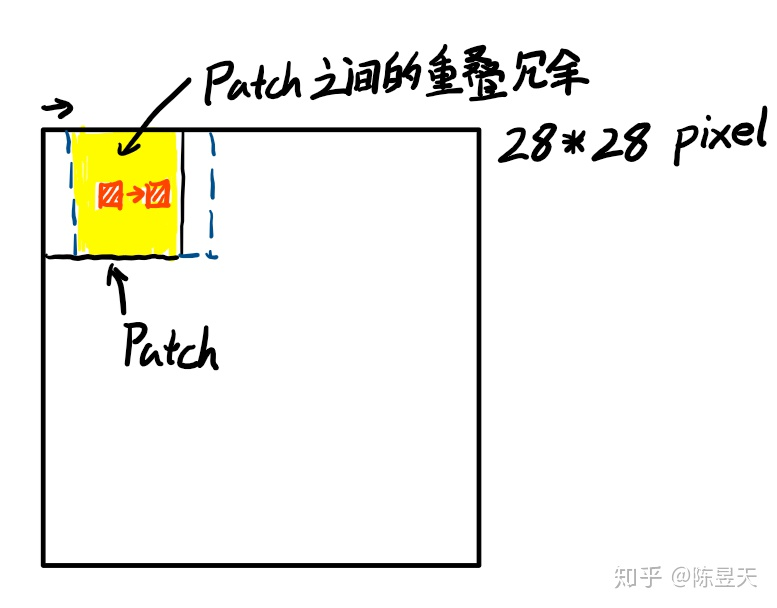
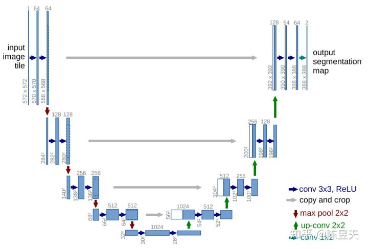
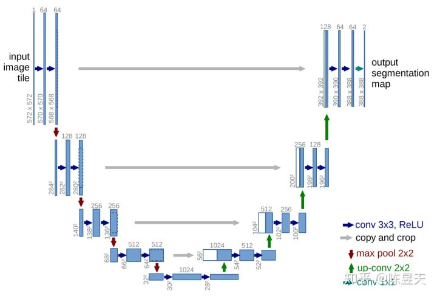

U-Net Convolutional Network
1. Introduction
U-net与其他机器视觉神经网络的根本区别：
- 一般的神经网络执行分类操作，输入一张图片，输出一个向量，其中每一项对应该图片属于对应标签的概率
 
- U-net 对图片进行“语义分割”，输出的信息不但包括对图片中属性特征的识别，还包括对于指定物体位置的识别
 
过去进行对图像进行语义分割的一种尝试是：通过提供一个像素周边的环境，训练网络识别这个像素属于的物体的类型。
 
这种方法确实可行，因为可以对图片中的每一个像素进行同样的操作来逐个识别每个像素属于什么物体。但是这个方法有两个不足之处:
- 处理速度太慢 因为神经网络每次要单独训练，而且划分的Patch之间有很大的冗余重复
 
- 网络的设计需要在确定位置和更大的感受野之间权衡 当使用尺寸更大的Patch时，需要使用更多的池化层，会降低网络确定像素位置的能力；当网络使用尺寸较小的Patch时，神经网络的感受野（对周边特征的“视野”）会变小。
与之前方法相比，U-net有以下几点特征：
- 我们的网络在上采样部分依然有大量的特征通道，这使得网络可以将空间上下文信息向更高的分辨率层传播。结果是，上采样路径基本对称于下采样路径，并呈现出一个U型。
- 网络不存在任何全连接层，并且，只使用每个卷积的valid部分，例如，分割图只包含这样一些像素点，这些像素点的完整上下文都出现在输入图像中。这种策略允许使用Overlap-tile策略无缝地分割任意大小的图像(参见下图)。
- 为了预测图像边界区域的像素点，我们采用镜像图像的方式补全缺失的环境像素。这个tiling方法在使用网络分割大图像时是非常有用的，因为如果不这么做，GPU显存会限制图像分辨率。
- 此外，为了使得U-net可以在小批量数据的情况下顺利训练，我们使用了弹性形变处理训练图像（因为生物材料经常发生形变），通过这种方法，我们可以极大地增加训练图像的数量。
- 为了应对细胞分割任务中的一个挑战是如何将同类别的相互接触的目标分开，为了解决这个问题，我们改进了网络的损失函数，提出了使用一种带权重的损失(weighted loss)；在新的损失函数中，分割相互接触的细胞会获得更大的权重。
2 Network Architecture
因此，本文作者基于“完全卷积网络”设计了 U-net 神经网络架构（如下图），用以处理图像的语义分割问题
 
在这个网络中，图片首先通过最大池化层进行“下采样”，减小图片分辨率的同时使用3*3卷积核提取图片的特征，每一层中，提取的特征通道数量是输入特征通道数量的两倍。通过这种方法，最后将输入图片转化为大小28*28，具有1024个特征通道状态。
接着，网络通过2*2的卷积核对图片进行上采样（如下图所示，但下图中使用的是3*3卷积核）

需要注意的是在上采样的过程中，图片依然保存了大量的特征通道，这有助于网络将图片周边的环境向上传播
与此同时，为了提高图片的分辨率，网络还会将池化前的特征通道经过裁剪后（裁剪是由于无填充像素下卷积操作带来的无法避免的尺寸减小导致的，如下图所示）复制到上采样时的状态中，再使用一个3*3卷积核将这些特征通道进一步整合起来。

如此重复此步骤直到图片的尺寸重新被放大至392*392 pixel （作为对比，输入是572*572像素，大小的减少是由于重复卷积操作导致的），此时图片依然有多达64个特征通道。
此时，我们可以看到上采样的通道与下采样的通道基本对称，整个神经网络呈现为“U形”
这时候再用3*3卷积核与1*1卷积核将这些特征通道重新整合起来即可。
需要注意的一点是，再U-net中，作者使用的所有激活函数都是线性修正单元（ReLU, rectified linear unit）。由于使用这种函数的一阶导数是常数，与带权输入无关，可以有效避免深度网络训练时的梯度消失问题与梯度爆炸问题（与之相对应，Sigmoid函数有严重的梯度消失问题，这会极大的降低神经元的学习速度，同时使得神经网络靠近输出的层级更加容易达到饱和状态）。
3 Training
U-net使用随机梯度下降的方法进行训练，每批次中只有一幅图片。为了减少使用单个图片计算损失函数梯度带来的，每次梯度下降方向由于图片之间差异带来的过大变化，作者使用了很大的动量值(momentum = 0.99) ，这意味着每一次梯度下降的方向更多的根据过去的图片的损失函数梯度来决定。
同时，为了使得神经网络可以区分开相邻的两个细胞，作者改进了交叉熵函数。作者通过在交叉熵函数中增加了单个像素的权重值使得网络更加注重细胞之间的分割（这里看不懂具体实现方法）
U-net使用了输入图片每一个像素的经过改进的交叉熵函数的柔性最大值作为整幅图片的损失函数。